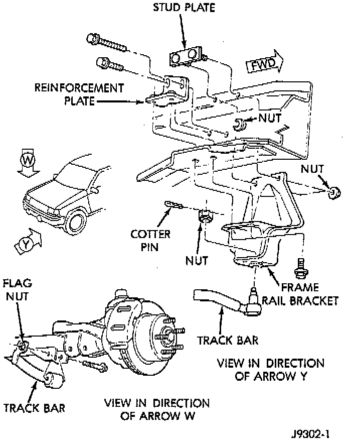

Front Track Bar Replacement

REMOVAL
1. Raise and support the vehicle.
2. Remove the cotter pin and nut from the ball stud end at the frame rail bracket.
NOTE: Use a universal puller to separate the ball stud from the frame rail bracket.
3. Remove the bolt and flag nut from the axle shaft tube bracket. Remove the track bar.
INSTALLATION
1. Install the track bar at axle tube bracket. Loosely install the retaining bolt and flag nut.
2. It may be necessary to pry the axle assembly over to install the track bar at the frame rail. Install track bar at the frame rail bracket. Install the retaining nut on the stud.
3. Tighten the ball stud nut to 81 Nm (60 ft. lbs.). Install a new cotter pin.
4. Remove the supports and lower the vehicle.
5. Tighten the bolt at the axle shaft tube bracket to 75 Nm (55 ft. lbs.).
6. Check alignment if a new track bar was installed.